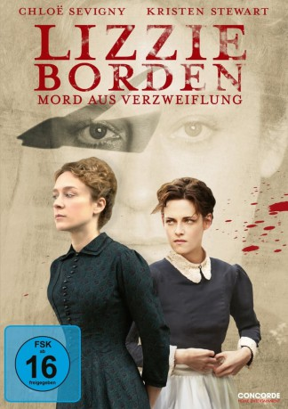

#10160 Lizzie Borden - Mord aus Verzweiflung
Alternativ: Lizzie (Englischer Titel)
 
 IMDB-Wertung: 5.7 / 10
IMDB-Wertung: 5.7 / 10  Metascore: 60
Metascore: 60 
Die Geschichte der berühmt-berüchtigten Axtmörderin Lizzie Borden auf neue Art erzählt. 1892, Fall River, Massachusetts: Lizzie Borden muss sich vor Gericht gegen die Anschuldigung verteidigen, ihre Familie mit einer Axt brutal umgebracht zu haben. Als der später legendär gewordene Mordfall geschieht, ist Lizzie 32 Jahre alt, unverheiratet und allein dadurch gesellschaftlich eine Außenseiterin. Sie lebt gemeinsam mit ihrer Schwester, Stiefmutter und einem schier übermächtigen, kontrollwütigen Vater abgeschieden unter klaustrophobischen Bedingungen. Als die junge und schöne Haushaltshilfe Bridget in das Leben der Bordens tritt, findet Lizzie in ihr bald eine intime Vertraute.
Jahr: 2018
Dauer: 105 Minuten
FSK: 16
Land: USA Studio: Roadside AttractionsTonspuren: DTS - ,
Untertitel: Englisch,
Auflösung: 1080p (1920x808) Größe: 6266 MB
Genre: Thriller, Drama, Krimi, Mystery, Biographie
Regisseur: Craig William Macneill
Drehbuch: Bryce Kass
Soundtrack: Jeff Russo
Darsteller:
 Kristen Stewart als Bridget Sullivan
Kristen Stewart als Bridget Sullivan Chloë Sevigny als Lizzie Borden
Chloë Sevigny als Lizzie Borden Fiona Shaw als Abby Borden
Fiona Shaw als Abby Borden Kim Dickens als Emma Borden
Kim Dickens als Emma Borden Denis O'Hare als John Morse
Denis O'Hare als John Morse Jamey Sheridan als Andrew Borden
Jamey Sheridan als Andrew Borden- Jeff Perry als Andrew Jennings
- Jay Huguley als William Henry Moody
- Tara Ochs als Susan Gilbert
 Darin Cooper als Jury Foreman
Darin Cooper als Jury Foreman- Tom Thon als Prof. Wood
- Don Henderson Baker als Marshall Hilliard
- Katharine Harrington als Matron
- Jody Matzer als Deputy Fleet
- Daniel Wachs als Dr. Bowen
- Roscoe Sandlin als Judge Blaisdell
 Marc Demeter als Reporter (uncredited)
Marc Demeter als Reporter (uncredited)- Terry Jackson als Bailiff (uncredited)
- Zachary Kyle Musten als Irish Townsman (uncredited)
- Ivylyn Nickel als Tenant (uncredited)
- Jeremy Sykes als Tenement Man (uncredited)
- Laura Whyte als Mrs. Brayton
- Vivian Majkowski als New Housemaid
- Glenn D. Bridges als Police Officer (uncredited)
- Thomas Mark Higgins als Police Man (uncredited)
- Elgin Lee als Pedestrian (uncredited)
- Ashton Tatum als Jury (uncredited)
Datei: X:\2018(G-M)\Lizzie Borden - Mord aus Verzweiflung (2018, FSK16, 1920x808).mkv seit 13.12.2018
Festplatte: HD 2018(G-Z)-2019(A-Z)
 Es gibt insgesamt 138 Filme in der Gruppe '2018(G-M)'
Es gibt insgesamt 138 Filme in der Gruppe '2018(G-M)'